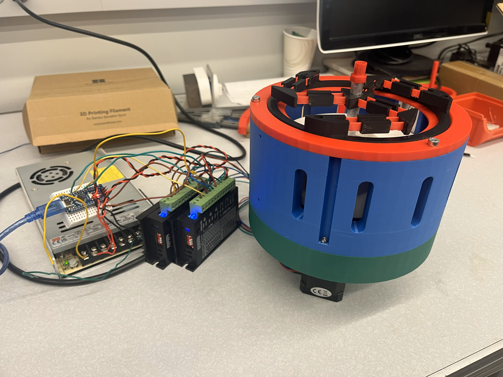

Cartesian Variable Stiffness Mechanism
August 2023 - December 2025
Motivation & Objectives

In industrial manufacutring, robots accel at pick-and-place tasks and handling large heavy loads, however, these applications also cause exacerbated wear due to the high inertial loads. To mitigate this, we introduce the design of a novel cartesian varaible stiffness mechanism placed between the robot arm and its end effector aimed to reduce these forces and provide extended capabilites. In this work, we developed several concepts for tuning stiffness and present a working prototype with a demonstrated use case in a pick-place scenario.
Goals
- Investigate possible VSM designs to compare their reachable stiffnesses and which features offer increased compactness and stiffness resolution
- Analytcially characterize each concept's stiffness profile and support with FEA and physical testing
- Design an inital prototype to inform future design decisions
- If possible, simulate a pick-and-place sceanrio and test the device's efficacy
Outcomes
- Analytically derived several stiffness models based on differnt VSM concepts
- Verified stiffness behavior uisng Finite Element Analysis and performed physical testing
- Built a working protoype with independently tunable stiffnesses for both the XY and Z stages
- Created an open loop control program to actuate between different levels of stiffness
- Commisioned a UR5 robot out of the box and mounted the CVSM for faciliated testing
- Successfully demonstrated its ability to aid in pick-and-place/assembly operations and protect the robot from potential crashes